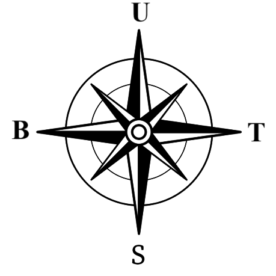

Trajectory Visualisizer
GPS
Langitude : XXXXXXX
Longitude : XXXXXXX
Daya Batterai
76.7%
Tegangan
5V
Arus
0.34353A
SOG
00 Knots
00 Km/h
COG
00 Knots
00 Km/h
Heading : 123°
Kompas

Trajectory Visualisizer
Waktu Mulai : Belum Mulai
Waktu Finish : Belum Sampai
Potret Gambar Atas
Peta Arena Lintasan (Trajectory)
Potret Gambar Bawah
RQT Plot
Menyambungkan
Live Foto Bawah
Menyambungkan
Live Kamera Bawah
Mode Lintasan
Keadaan Sekarang
Log Kamera Atas : TipeLintasan_Atas_Hijau_Time.jpg
Log Kamera Bawah : Menuggu....